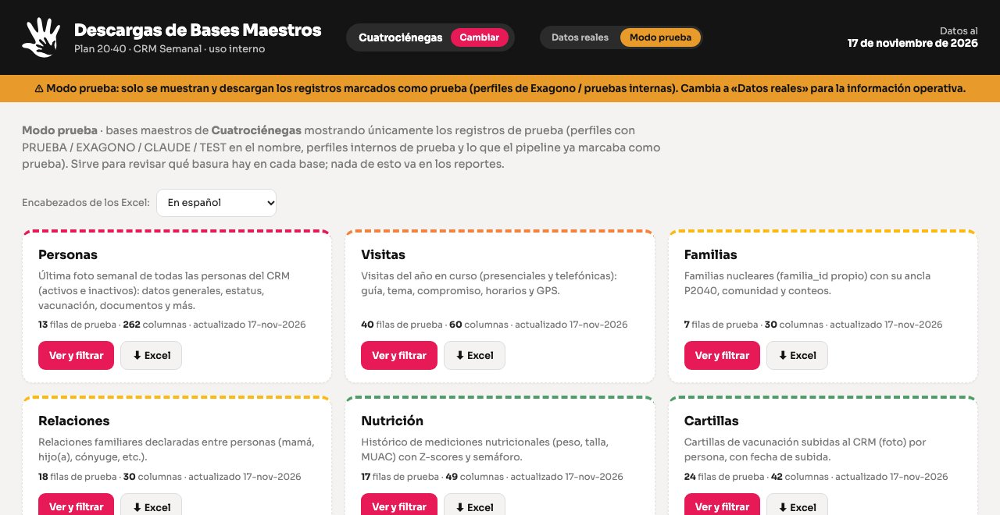

Manual de Descargas de Maestros
Cómo bajar a Excel las bases del CRM que alimentan los reportes: qué trae cada base, cómo filtrarla y cómo cuidarla.
1¿Para qué sirve?
Es el lugar para bajar a Excel las bases «maestros» del CRM: las mismas tablas que alimentan todos los reportes del portal. Sirve para hacer un análisis propio, revisar la captura o sacar una lista que ningún reporte trae.
2¿De dónde viene la información?
3Cómo moverte

- Elige la comunidad: Cuatrociénegas o Independencia. Solo verás y descargarás registros de esa comunidad; con Cambiar, en la barra de arriba, eliges otra.
- Datos reales · Modo prueba: los datos operativos o solo los registros de prueba (más abajo se explica).
- Encabezados de los Excel: en español, o los nombres originales del CRM (en inglés).
- Cada tarjeta es una base: qué trae, cuántas filas y columnas tiene y cuándo se actualizó. Ver y filtrar la abre en pantalla y ⬇ Excel la baja completa.
4Las 13 bases
| Base | Qué trae |
|---|---|
| Personas | La foto semanal de todas las personas del CRM, activas e inactivas: datos generales, estatus, vacunación, documentos y más. |
| Visitas | Las visitas del año en curso, presenciales y telefónicas: guía, tema, compromiso, horarios y GPS. |
| Familias | Las familias nucleares, con su ancla P2040, comunidad y conteos. |
| Relaciones | Las relaciones familiares declaradas entre personas: mamá, hijo(a), cónyuge, etc. |
| Nutrición | El histórico de mediciones: peso, talla, MUAC, puntajes Z y semáforo. |
| Cartillas | Las cartillas de vacunación subidas al CRM (foto), por persona, con su fecha. |
| Casos | Los casos de las dos comunidades, con su clasificación, estatus y seguimiento. |
| Apoyos | Los apoyos entregados a familias y personas: tipo, fecha y detalle. |
| Programas | Las asistencias de cada persona a sesiones de programas y formación. |
| Programas Evaluaciones | Las evaluaciones y calificaciones de los programas de formación. |
| Documentos | El estatus de cada documento por persona: qué hay y qué falta. |
| Archivos | Los archivos subidos por persona, una fila por persona. |
| Cambios Perfil | La bitácora de cambios al perfil de las personas: campo modificado, valor anterior y nuevo, quién y cuándo. |
5Ver, filtrar y descargar
Al dar clic en Ver y filtrar se abre la base en pantalla, por páginas (‹ Anterior · Siguiente ›).
- ＋ Filtro por columna: elige una columna y un valor para quedarte solo con los renglones que te sirven. Aplicar lo guarda; puedes sumar varios filtros.
- Columnas visibles: marca solo los campos que necesitas (Todas o Ninguna para empezar rápido) y da Listo.
- ⬇ Excel (vista filtrada) baja solo lo que ves, con tus filtros y columnas. ⬇ Excel (toda la comunidad) baja la base completa.
- ← Todas las bases te regresa a las tarjetas.
6Datos reales y modo prueba
Datos reales es la información operativa y es lo que debes usar casi siempre.
Modo prueba muestra únicamente los registros de prueba: perfiles con PRUEBA, EXAGONO, CLAUDE o TEST en el nombre, perfiles internos de prueba y lo que el sistema ya tenía marcado como prueba. Sirve para revisar qué registros de prueba quedaron en cada base; ninguno de ellos entra en los reportes.
7Cuidados y preguntas frecuentes
¿Por qué mi cuenta no da lo mismo que un reporte?
Las bases traen todo: activos e inactivos, todos los perfiles y todas las fechas. Los reportes aplican reglas (por ejemplo, solo niños P2040 activos al corte). Para comparar, filtra igual que el reporte o pregúntale a Análisis la regla exacta.
¿De qué fecha son los datos?
De la última descarga semanal del CRM: la fecha está arriba a la derecha («Datos al…») y en cada tarjeta («actualizado…»). Lo que se capturó después aparecerá en la siguiente actualización.
¿Encabezados en español u originales?
En español es más fácil de leer. Los originales son los nombres de los campos del CRM; úsalos si vas a cruzar la base con otro archivo que los use.